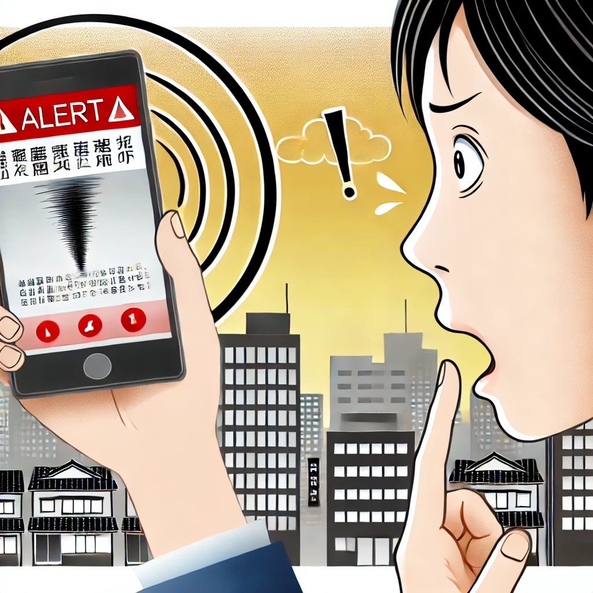

Sistem Pendeteksi Gempa Jepang yang Viral: Inovasi Teknologi untuk Mengurangi Risiko Bencana
Baru-baru ini, Jepang telah menarik perhatian dunia dengan sistem pendeteksi gempa terbaru yang viral. Teknologi ini dirancang untuk memperbaiki sistem peringatan dini dan mitigasi risiko bencana yang sangat penting di negara yang sering dilanda gempa bumi. Artikel ini akan membahas sistem pendeteksi gempa terbaru Jepang, bagaimana sistem ini bekerja, dan dampaknya terhadap masyarakat serta potensi aplikasi di masa depan.
Apa Itu Sistem Pendeteksi Gempa Jepang yang Viral?
Sistem pendeteksi gempa terbaru Jepang, dikenal dengan nama "Earthquake Early Warning System" atau EEWS, adalah teknologi mutakhir yang dirancang untuk mendeteksi gempa bumi sebelum getaran utama mencapai permukaan. Sistem ini menggunakan kombinasi sensor seismik, algoritma prediksi, dan jaringan komunikasi untuk memberikan peringatan dini kepada masyarakat dan infrastruktur.
Bagaimana Sistem Ini Bekerja?
Sistem ini bekerja melalui beberapa langkah:
- Sensor Seismik dan Jaringan: Jaringan sensor seismik yang tersebar di seluruh Jepang mendeteksi getaran kecil sebelum gelombang utama gempa tiba. Data ini dikumpulkan dan dianalisis secara real-time.
- Algoritma Prediksi: Data dari sensor diproses menggunakan algoritma canggih untuk memprediksi kekuatan dan lokasi gempa, serta estimasi waktu tiba dan intensitas getaran utama.
- Peringatan Dini: Setelah analisis, sistem mengirimkan peringatan dini melalui televisi, radio, dan aplikasi smartphone, memberikan waktu beberapa detik hingga beberapa menit sebelum getaran utama terjadi.
- Komunikasi dan Integrasi: Peringatan juga terintegrasi dengan infrastruktur kritis seperti sistem transportasi dan utilitas, memungkinkan otomatisasi dalam menghentikan kereta api dan menutup pasokan gas.
Manfaat dan Dampak
- Pengurangan Risiko Kecelakaan: Peringatan dini memungkinkan masyarakat melindungi diri sebelum getaran utama terjadi, mengurangi risiko cedera dan kematian.
- Mitigasi Kerusakan Infrastruktur: Peringatan dini membantu meminimalkan kerusakan pada infrastruktur kritis seperti jembatan dan gedung.
- Kesiapsiagaan Masyarakat: Memberikan informasi lebih awal untuk kesiapan masyarakat menghadapi gempa, mengurangi kepanikan.
- Inovasi Teknologi: Sistem ini menampilkan teknologi terbaru dalam analisis data dan komunikasi, memperkuat posisi Jepang sebagai pemimpin dalam teknologi bencana.
Reaksi dan Penerimaan
Sistem ini telah mendapat perhatian luas dan pujian karena kemampuannya memberikan peringatan akurat. Banyak yang memuji Jepang atas kemajuan teknologi ini, yang dianggap sebagai langkah penting dalam pengurangan risiko bencana. Respons positif ini menunjukkan bahwa sistem ini dapat menjadi model bagi negara lain yang juga menghadapi risiko gempa bumi.
Tantangan dan Masa Depan
Beberapa tantangan yang harus diatasi termasuk biaya pemeliharaan sensor, integrasi dengan infrastruktur yang ada, dan pengelolaan data. Di masa depan, teknologi ini bisa diperluas dengan integrasi AI untuk prediksi yang lebih akurat dan respons yang lebih cepat.
Kesimpulan
Sistem pendeteksi gempa terbaru Jepang adalah contoh inovasi teknologi yang signifikan untuk melindungi masyarakat dari risiko gempa bumi. Dengan memberikan peringatan dini, sistem ini tidak hanya meningkatkan keselamatan tetapi juga mengurangi dampak bencana. Investasi dalam teknologi ini adalah langkah proaktif untuk melindungi kehidupan dan infrastruktur.